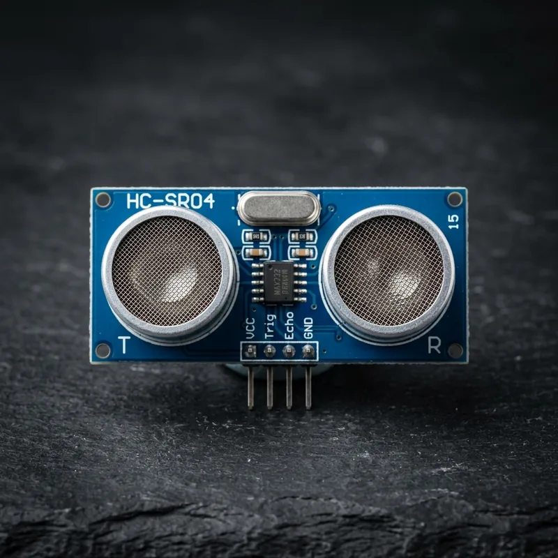

HC-SR04 Ultrasonic Distance Sensor
৳150
Measure distance accurately with the HC-SR04 Ultrasonic Sensor, perfect for Arduino and robotics projects. This sensor uses ultrasonic waves to detect objects and calculate distance with high precision. Ideal for obstacle detection, smart parking systems, and automation projects. From 2cm to 400cm, it's the standard for robotic obstacle avoidance — compact, lightweight, and easy to interface.
Key Features:
- Measuring Range: 2cm – 400cm
- Operating Voltage: 5V DC
- Quiescent Current: <2mA
- Measuring Angle: <15 degrees
- High accuracy: up to 3mm precision
- Low power consumption
- Easy interface with Arduino & microcontrollers
- Compact and lightweight
Technical Specifications:
Common Project Applications:
- Robotic obstacle detection, line tracking & navigation
- Environmental monitoring (temperature, humidity, air quality)
- Smart security alarms & emergency alert triggers
- Automation feedback loops with Arduino & ESP32
Why Buy from ElectroMart BD?
- Affordable sensor price in Bangladesh
- Reliable and tested modules
- Fast delivery across BD
Package Includes:
1 × HC-SR04 Ultrasonic Sensor
Frequently Asked Questions:
Q: What is the price of HC-SR04 Ultrasonic Distance Sensor in Bangladesh?A: The price of HC-SR04 Ultrasonic Distance Sensor is ৳150 at ElectroMart BD with fast delivery anywhere in Bangladesh.
Q: Is HC-SR04 Ultrasonic Distance Sensor compatible with Arduino and ESP32?A: Yes, HC-SR04 Ultrasonic Distance Sensor is fully compatible with standard development platforms like Arduino, ESP32, Raspberry Pi, and NodeMCU.
Q: How can I order HC-SR04 Ultrasonic Distance Sensor or get technical advice?A: You can order directly from our website or message our engineering support team via WhatsApp at +8801577098376.
Q: What are the delivery charges and delivery time in Bangladesh?A: Delivery takes 24 to 48 hours inside Dhaka and 2 to 3 business days nationwide across Bangladesh.